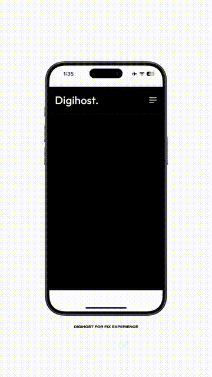

Pioneer Things
The design style of your business influences the visual value.

POWERED BY PT. DIGI KARYA HARMONI
The design style of your business influences the visual value.
Membantu digitalisasi bisnis umkm, pemerintahan dan korporasi.

Berpengalaman dalam digitalisasi selama lebih dari 3 tahun. Menguasai bahasa pemrograman yang dibutuhkan industri perusahaan.
Figma merupakan platform design yang sering saya gunakan untuk kebutuhan segala design.
Merupakan bahasa pemrograman yang saya pakai untuk pengembangan website
Untuk menyesuaikan kebutuhan pengembangan website, React js merupakan framework yang sangat tepat.
Sebagai bentuk "User Interface", tailwind sangat rekomended untuk gaya website anda. Adapun framework lain yang saya gunakan berdasarkan kebutuhan.
Berbagai portofolio saya dalam terjun di dunia teknologi informasi, mengedepankan integritas dan kepercayaan klien.
Membangun sistem dashboard dengan data yang dinamis
Membangun sistem pendataan penduduk dengan data yang kompeherensif
Profile Desa yang terintegrasi dengan Panel Admin
Halaman media publik dengan berita terbaru di sekitar wilayah tertentu.
Integrasi sistem administrasi publik agar masyarakat lebih mudah diakses.
Dengan memanfaatkan perkembangan teknologi, peta desa sangat membantu dalam kontrol pusat program pemerintahan.
Get the latest updates.